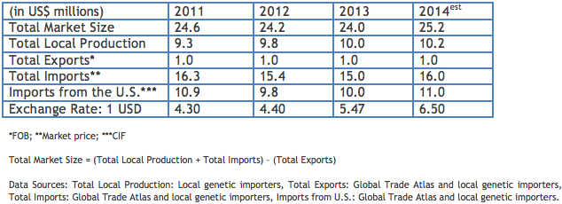

Argentina’s cattle herd is approximately 51 million head. Roughly 2.1 million cows are in dairy production, and about 20.9 million cows are for beef production. The quality of both dairy and beef herds are very good, but need to continuously incorporate the latest high quality genetics to keep up the standard. The majority of imported semen is from dairy breeds, but imports of beef genetics have increased significantly over the past few years. The U.S. accounts for almost two-thirds of the total imported semen market, followed by Canada.
Return to Top
Both dairy and beef semen (especially Angus) have good potential growth in 2014.
Return to Top
Anticipated good returns in both dairy and beef sectors will continue to encourage new investment, including a larger use of artificial insemination and the use of higher quality genetics. The use of beef semen with production data is increasing, but semen distributors indicate that much needed education has to be done with breeders. Overall, imports of Black and Red Angus, Braford, Brangus, and Hereford semen have the greatest potential. Semen of Black and Red Angus and, to a lesser extent, Brangus have the greatest opportunities from the United States.
Return to Top
• National Association of Animal Breeders: http://www.naab-css.org
• Argentine Chamber of Biotechnology and Animal Reproduction (Spanish): http://www.cabia.org.ar
• Ministry of Agriculture, Livestock and Fisheries (Spanish): http://www.minagri.gob.ar
• National Service of Agricultural and Food Health and Quality (SENASA) (Spanish): http://www.senasa.gov.ar